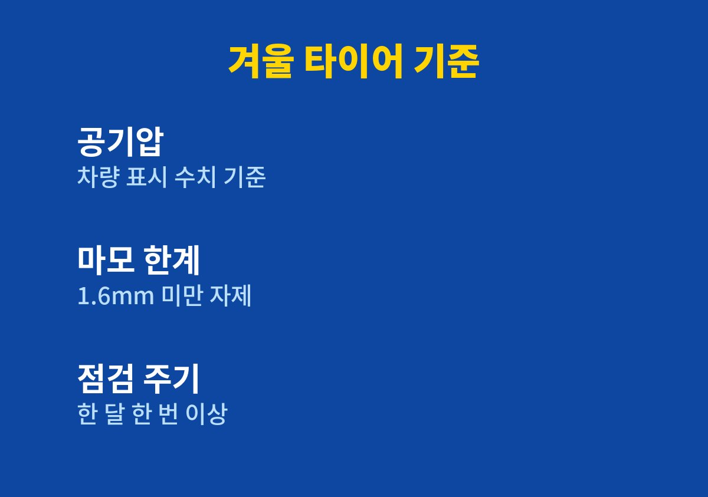
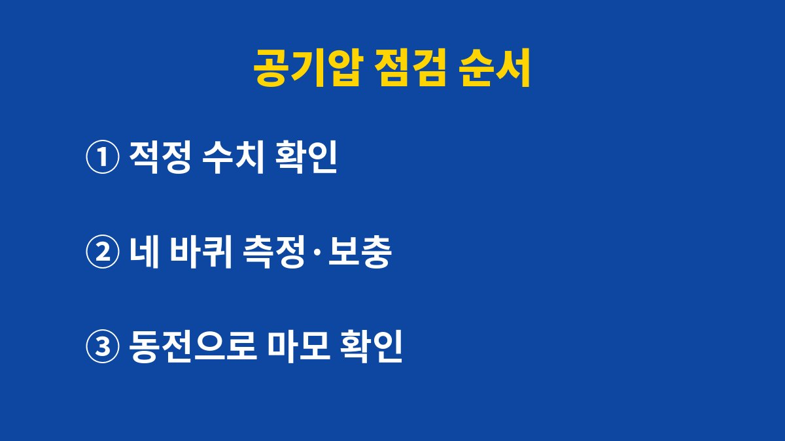

겨울 아침마다 타이어 공기압 경고등이 켜져 당황했던 사람에게 필요한 기준과 순서를 담았다.
2026년 11월 기준 공공기관과 타이어 제조사 안내를 보면, 겨울 타이어 공기압은 기온이 떨어지면 함께 줄어들기 때문에 한 달에 한 번 이상 공기압과 마모 상태를 확인하는 것이 핵심이다.
나도 경고등이 뜬 뒤에야 바퀴를 들여다보던 사람이었는데, 점검하는 날을 정해 두고 나서 겨울 출근길이 한결 편해졌다.
날씨가 추워지기 시작하면 계기판에 타이어 공기압 경고등이 켜지는 날이 생긴다.
나도 처음에는 펑크가 난 줄 알고 아이들 등원길에 안전한 곳에 차를 세운 적이 있다.
막상 둘러보니 바퀴에 박힌 것은 없었고, 낮이 되자 경고등이 슬그머니 꺼졌다.
타이어 안 공기는 온도가 낮아지면 부피가 줄어 압력도 함께 내려간다.
한 타이어 제조사 안내에는 기온이 10℃ 떨어질 때 공기압이 1~2psi 정도 줄어든다고 적혀 있다.
가을에 맞춰 둔 공기압이 겨울 아침에는 부족해지는 이유가 바로 이것이다.
그래서 겨울에는 경고등이 뜨기 전에 먼저 확인하는 습관이 필요하다고 느꼈다.
내가 확인하는 기준은 공기압, 마모 상태, 타이어 종류 세 가지다.
국토교통부와 한국교통안전공단은 마모 한계인 1.6mm 미만 타이어는 사용하지 않는 것이 바람직하다고 안내한다.
같은 안내에서 타이어는 한 달에 한 번 이상 점검하라고 권한다.
겨울용 타이어는 제조사 설명 기준으로 영상 7℃ 이하에서 제 성능을 내도록 만들어졌다.
사계절용 타이어를 쓴다면 눈 소식에 대비해 스노 체인을 준비해 두라는 안내도 있다.
적정 공기압은 차마다 달라서 운전석 문 안쪽 표시나 차량 설명서에 적힌 숫자를 기준으로 삼는다.
| 확인 항목 | 기준 | 내가 한 일 |
|---|---|---|
| 공기압 | 차량 표시·설명서 수치 | 매달 주유하는 날 확인 |
| 마모 한계 | 1.6mm 미만 사용 자제 | 동전으로 홈 깊이 확인 |
| 타이어 종류 | 겨울용은 7℃ 이하에서 성능 발휘 | 사계절용이면 체인 준비 |

쇼핑몰 택배 마감에 쫓기다 보니 따로 정비소에 들를 시간을 내기가 쉽지 않았다.
그래서 한 달에 한 번 주유하는 날에 공기압까지 같이 보는 것으로 정했다.
공기 주입기가 있는 주유소를 골라 다니니 따로 시간을 쓰지 않아도 되었다.
오래 달려 타이어가 데워지기 전에 재야 숫자가 정확하다는 점도 기억해 두었다.
마모 상태는 100원짜리 동전을 타이어 홈에 거꾸로 꽂아 보는 방법으로 확인한다.
동전 속 인물의 감투가 절반 이상 가려지면 양호하고, 훤히 다 보이면 바로 점검과 교체가 필요하다는 것이 제조사 설명이다.
홈 안쪽에 있는 마모 한계선 띠가 바닥면과 거의 평평해졌다면 교체를 미루지 않는다.
나는 네 바퀴를 모두 보고, 앞뒤 차이가 크면 정비소에 위치 교환이 필요한지 물어본다.
아이 둘을 태우고 다니면서 출발 전에 차 주변을 한 바퀴 도는 습관이 생겼다.
타이어 옆면이 눈에 띄게 주저앉았거나 긁힌 자국이 있는지만 봐도 큰 문제를 미리 알아챌 수 있다.
이 습관 덕분에 겨울 아침 경고등이 켜져도 예전처럼 당황하지 않게 되었다.
처음 해 보는 사람도 그대로 따라 할 수 있게 내가 하는 순서를 정리했다.
전체 과정은 주유하는 김에 끝낼 수 있을 만큼 간단하다.

겨울 타이어 공기압은 한 번 맞춰 두면 끝나는 일이 아니라 기온에 따라 계속 변하는 숫자다.
그래도 한 달에 한 번 주유하는 날로 정해 두니 부담 없이 이어갈 수 있었다.
차종과 타이어마다 기준이 다르니 정확한 수치는 설명서와 정비소에서 함께 확인하는 것이 안전하다.
다음 글에서는 겨울철 와이퍼와 워셔액을 점검하는 방법을 정리할 예정이다.
※ 2026년 기준 공공기관 안내와 개인 경험을 바탕으로 정리한 글이며, 차종과 연식에 따라 기준이 다를 수 있어 차량 설명서와 공식 안내를 함께 확인하길 바란다.